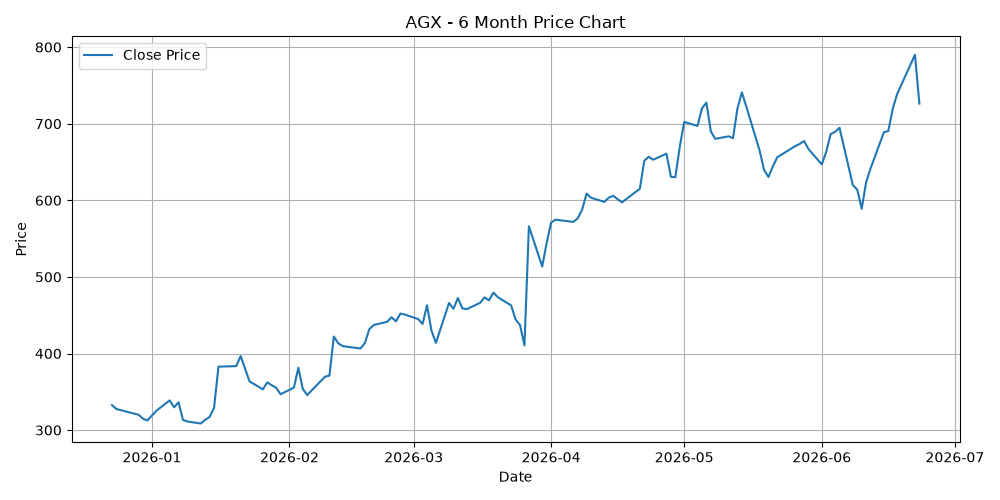
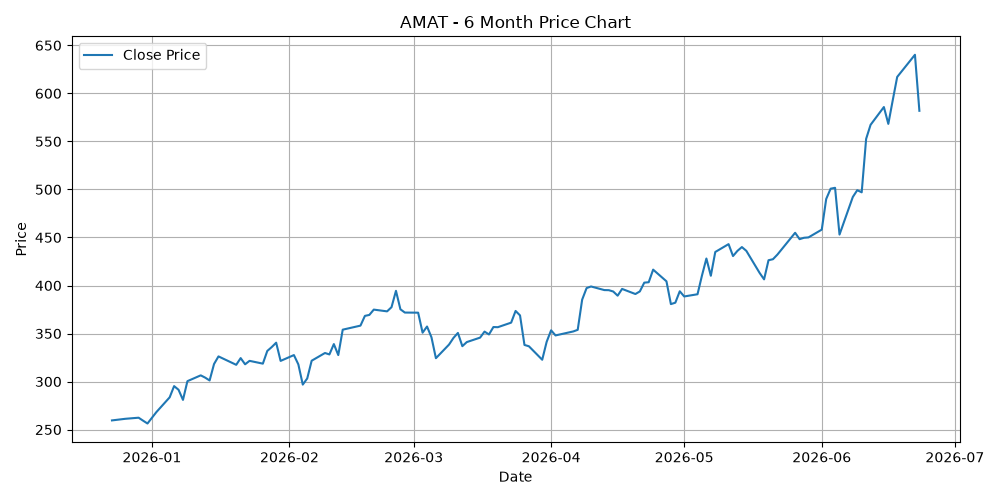
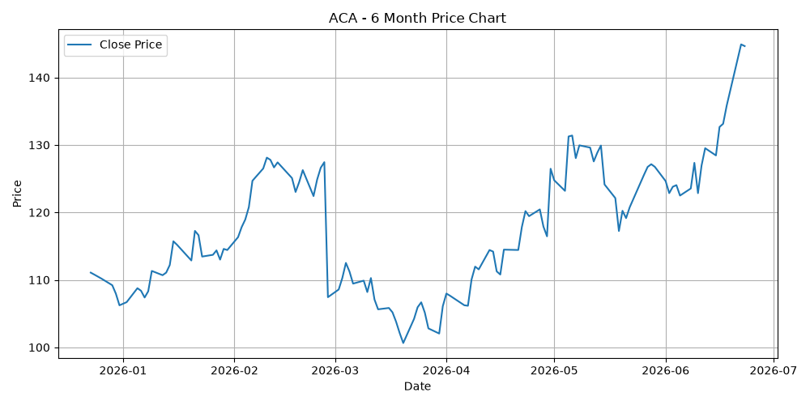
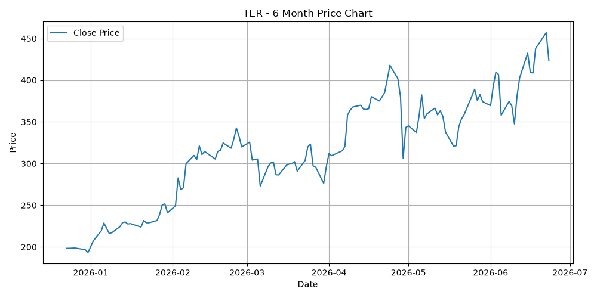
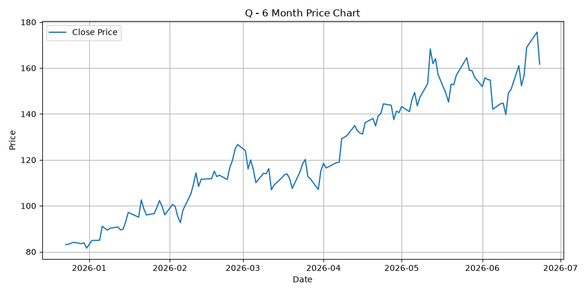

모든 자원과 관심을 AGX에 집중하십시오. 매출, 이익, 잉여현금흐름 모두 기하급수적 성장 곡선을 그리는 AGX만이 목표로 하시는 압도적인 부를 달성하게 해줄 수 있는 유일한 핵심 주식입니다. 나머지 종목(AMAT, Q, TER, ACA)은 자산 비중을 최소화하거나 매도하여 최고의 기회에 자금을 집중하는 전략을 강력히 권장합니다.
재무 분석: 4가지 핵심 지표 모두 전례 없는 폭발적인 성장(YoY)을 기록 중입니다. 매출은 2023년 4.55억 달러에서 2026년 9.44억 달러로 두 배 이상 급증했습니다. 영업이익은 4,166만 달러에서 1.34억 달러로 3배 이상 뛰었고, 순이익도 3,309만 달러에서 1.37억 달러로 4배 이상 폭증했습니다. 특히 잉여현금흐름은 2023년 적자(-3,343만 달러)에서 2026년 4.1억 달러로 기하급수적으로 폭증했습니다.
추천 이유: 조 단위 부호가 되기 위해 필요한 완벽한 '멀티배거(Multi-bagger)' 요건을 갖추고 있습니다. 경이로운 잉여현금흐름 창출 능력과 이익의 폭발적 성장이 돋보입니다.
투자 전략: 적극 매수 및 포트폴리오 핵심 편입 (Aggressive Strong Buy). 이 주식은 자산을 폭발적으로 증식시켜 줄 핵심 엔진입니다. 포트폴리오의 가장 큰 비중을 할애하여 강력한 복리 효과를 누려야 합니다.

재무 분석: 견고하지만 '고속 성장'은 아닙니다. 매출은 2022년 257.8억 달러에서 2025년 283.6억 달러로 완만하게 증가했습니다. 하지만 순이익은 2024년(71.7억 달러)을 정점으로 2025년(69.9억 달러)에 하락세로 전환되었으며, 잉여현금흐름은 2023-2024년 75억 달러 수준에서 2025년 56.9억 달러로 크게 꺾였습니다.
투자 전략: 현금 창출용 자산 방어 (Maintain / Defensive play). 성장에 베팅하기보다는 자산의 변동성을 줄이고 배당 등을 통해 안정적인 현금을 확보하는 방어적 수단으로만 활용해야 합니다.

재무 분석: 매출은 꾸준히 증가했으나 이익 지표의 일관성이 떨어집니다. 순이익은 2025년에 2.08억 달러로 반등했지만 아직 과거 고점 아래입니다. 잉여현금흐름 역시 2024년에 3.12억 달러로 급증했다가 2025년 1.75억 달러로 반토막 났습니다.
투자 전략: 관망 (Hold / Monitor). 뚜렷한 마진 개선 및 잉여현금흐름의 안정적인 우상향이 증명될 때까지 투자를 유보해야 합니다.

재무 분석: 전반적으로 2022년 대비 정체 상태입니다. 매출은 2025년에 31.9억 달러로 전고점을 살짝 넘겼으나 영업이익과 순이익은 2022년 수준을 크게 밑돌고 있습니다. 잉여현금흐름도 4억 달러 중반대에서 전혀 성장하지 못하고 있습니다.
투자 전략: 매도 후 자본 재배치 (Sell & Reallocate). 억만장자의 포트폴리오에는 시간과 자본의 효율성이 생명입니다. 성장이 정체된 TER에 자금을 묶어두기보다는 AGX처럼 압도적으로 성장하는 기업에 자본을 재배치하십시오.

재무 분석: 고속 성장과는 거리가 멂. 매출은 2023년에 하락했다가 2025년 47.5억 달러로 간신히 이전 수준을 회복했습니다. 영업이익과 순이익 역시 2022년 고점을 넘지 못했습니다.
투자 전략: 비중 축소 (Underweight / Avoid). 폭발적인 성장이 확인되지 않으므로 기회비용을 고려해 투자 대상에서 제외하거나 비중을 최소화하는 것이 좋습니다.
